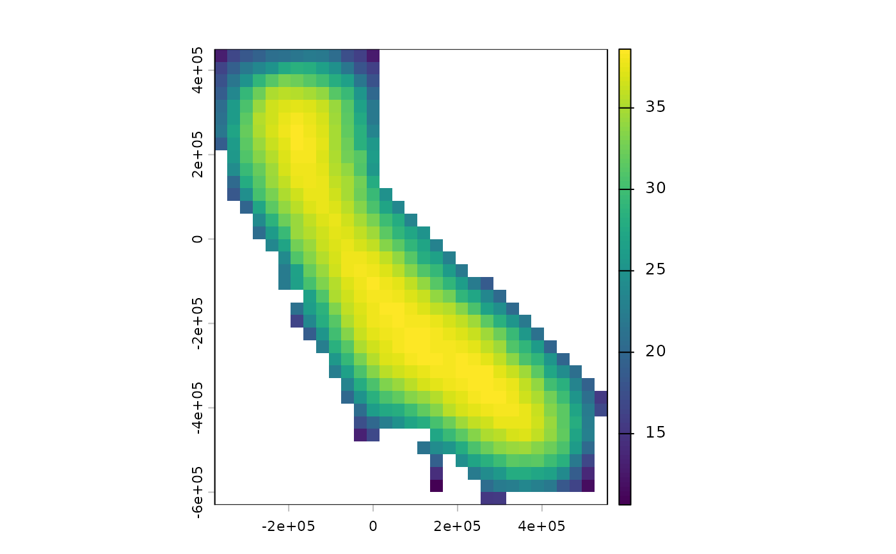

Generates random hexagonal tilings of the occupied sites in a phylospatial
object, for use as site_groups in ps_rand(). This is a wrapper around
nullcat::tile_groups() that extracts site coordinates from ps.
Arguments
- ps
A
phylospatialobject with spatial data.- spacing
Distance between the centers of neighboring tiles: in meters if
pshas a coordinate reference system, otherwise in coordinate units. Either a single value or a vector ofnvalues (one per tiling). Supply eitherspacingorgroup_size.- n
Number of tilings to generate. For
ps_rand(), use one per randomization (n = n_rand).- group_size
Alternative to
spacing: the nominal number of sites per tile, ignoring edges and gaps (see details). Either a single value or a vector ofnvalues. Requires sites with areas (raster cells or polygons).
Value
An integer matrix with a row for every occupied site (in the order of
ps$occupied) and a column for every tiling, giving each site's tile, with
the tile spacing used as its "spacing" attribute.
Details
Supplying the result to ps_rand(site_groups = ...) gives a spatially
constrained null model: in each randomization, the community matrix is
randomized independently within each tile of a different, randomly placed
and oriented tiling, so taxa are only redistributed among nearby sites.
Across randomizations, two sites a distance d apart share a tile with a
probability that falls from 1 at d = 0 to about 0.5 at
d = 0.42 * spacing, and to 0 at about 1.15 * spacing (somewhat more for
the occasional elongated tile in geographic coordinates). See
nullcat::tile_groups() for details.
Site coordinates are cell centers for raster data, or feature centroids for
sf data. If ps has a coordinate reference system, sites are projected to
longitude and latitude and tiled on the sphere, with spacing in meters, so
results don't depend on the map projection. Without a coordinate reference
system, sites are tiled in the plane, with spacing in coordinate units.
The scale of the tiling can be set either as a distance (spacing) or as a
nominal number of sites per tile (group_size). group_size is converted to
the spacing that gives tiles of group_size times the average area of the
occupied sites, i.e. the expected number of sites in a tile that lies wholly
within a fully occupied part of the study area. Note that this ties the
distance scale of the null model to the resolution of the data: the same
group_size covers a larger distance on a coarser grid. The spacing used is
returned as the "spacing" attribute of the result.
Sites near edges and gaps tend to fall in tiles with fewer sites than
group_size, and a site alone in its tile is not changed by fixed-margin
randomizations. Use ps_group_sizes() to map each site's realized average
pool size.
Examples
# \donttest{
if (requireNamespace("nullcat", quietly = TRUE)) {
ps <- moss()
tiles <- ps_tile_groups(ps, spacing = 200e3, n = 100)
terra::plot(ps_group_sizes(ps, tiles))
# tiles of about 40 sites each (away from edges and gaps)
tiles40 <- ps_tile_groups(ps, group_size = 40, n = 100)
attr(tiles40, "spacing") # in meters
}

#> [1] 203885.5
# }